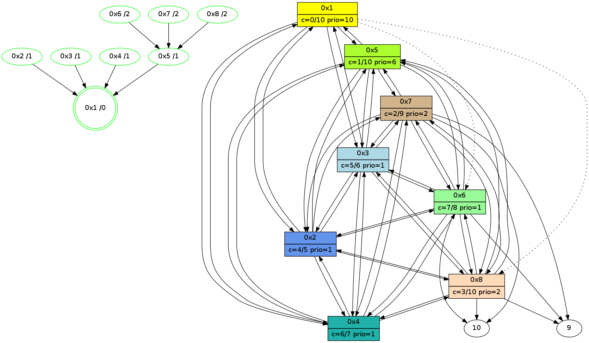

>> << IDX [start] -100 -25 -5 +0 +5 +25 [445.692658901]
 Previous packets
----------------------------------------------------------------------
440.150774 beacon01(11f6) #0 coord=01,02,03,04,05,06,07,08,0a,09 cycle=1008.0ms assoc
-- color-indic=0 64 46 b7
440.160924 beacon02(11f6) #0 coord=01,02,03,04,05,06,07,08,0a,09 cycle=1008.0ms assoc 64 d5 86
440.170909 beacon03(11f6) #0 coord=01,02,03,04,05,06,07,08,0a,09 cycle=1008.0ms assoc 64 af cb
440.180910 beacon04(11f6) #0 coord=01,02,03,04,05,06,07,08,0a,09 cycle=1008.0ms assoc 64 d8 21
440.190911 beacon05(11f6) #0 coord=01,02,03,04,05,06,07,08,0a,09 cycle=1008.0ms assoc 64 a2 6c
440.200910 beacon06(11f6) #0 coord=01,02,03,04,05,06,07,08,0a,09 cycle=1008.0ms assoc 64 2c bb
440.210913 beacon07(11f6) #0 coord=01,02,03,04,05,06,07,08,0a,09 cycle=1008.0ms assoc 64 56 f6
440.220915 beacon08(11f6) #0 coord=01,02,03,04,05,06,07,08,0a,09 cycle=1008.0ms assoc 64 d3 67
440.334957 [Hello(1): seq=223 sym=5,3,2,4 asym=8,6 color=0/10 sysInfo=hasWarning,MaxColorIndicationCalled,MaxColorResponseCalled,MaxColorRequestCalled,ColoringModeRequestCalled stat=5:2,0,12,2/3:7,0,11,13/2:2,0,10,14/4:6,1,11,14/8:4,0,6,2/6:2,1,9,12]
----------------------------------------------------------------------
441.259150 beacon01(11f6) #0 coord=01,02,03,04,05,06,07,08,0a,09 cycle=1008.0ms assoc
-- color-indic=0 64 52 d9
441.269320 beacon02(11f6) #0 coord=01,02,03,04,05,06,07,08,0a,09 cycle=1008.0ms assoc 64 c1 e8
441.279285 beacon03(11f6) #0 coord=01,02,03,04,05,06,07,08,0a,09 cycle=1008.0ms assoc 64 bb a5
441.289285 beacon04(11f6) #0 coord=01,02,03,04,05,06,07,08,0a,09 cycle=1008.0ms assoc 64 cc 4f
441.299286 beacon05(11f6) #0 coord=01,02,03,04,05,06,07,08,0a,09 cycle=1008.0ms assoc 64 b6 02
441.309287 beacon06(11f6) #0 coord=01,02,03,04,05,06,07,08,0a,09 cycle=1008.0ms assoc 64 38 d5
441.319286 beacon07(11f6) #0 coord=01,02,03,04,05,06,07,08,0a,09 cycle=1008.0ms assoc 64 42 98
441.329291 beacon08(11f6) #0 coord=01,02,03,04,05,06,07,08,0a,09 cycle=1008.0ms assoc 64 c7 09
441.374113 [STC(1) #0.30 new-neigh,stable,to-color d=0]
441.386794 [Hello(7): seq=223 sym=10,5,6,8,3,2,4,9 color=2 sysInfo=hasWarning,MaxColorIndicationCalled,ColoringModeIndicationCalled,MaxColorResponseCalled stat=10:3,10,6,8/5:9,0,11,2/6:9,1,9,12/8:4,1,8,3/3:3,15,10,12/2:1,15,7,11/4:4,15,2,10/9:15,0,10,3]
441.392743 [Hello(4): seq=223 sym=1,2,5,6,3,8,7 color=6 sysInfo=MaxColorIndicationCalled,ColoringModeIndicationCalled,MaxColorResponseCalled stat=1:14,0,14,0/2:3,1,11,13/5:7,14,11,2/6:13,0,10,12/3:7,0,9,11/8:1,0,5,2/7:6,14,10,10]
441.395940 [STC(4)->1 #0.30 new-neigh,stable,to-color d=1]
441.397421 [Hello(2): seq=223 sym=1,7,5,3,8,4,6 color=4 sysInfo=hasWarning,MaxColorIndicationCalled,ColoringModeIndicationCalled,MaxColorResponseCalled stat=1:14,1,13,0/7:0,14,10,10/5:1,1,11,2/3:1,0,9,11/8:0,0,6,2/4:3,15,10,13/6:7,1,9,12]
441.401905 [STC(2)->1 #0.30 new-neigh,stable,to-color d=1]
441.405271 [Hello(5): seq=223 sym=1,2,7,6,3,8,4 color=1 sysInfo=hasWarning,MaxColorIndicationCalled,ColoringModeIndicationCalled,MaxColorResponseCalled stat=1:15,0,13,0/2:3,1,10,13/7:4,14,10,10/6:15,1,9,12/3:5,0,11,12/8:1,15,6,2/4:6,1,10,12]
441.408797 [STC(5)->1 #0.30 new-neigh,stable,to-color d=1]
441.420781 [Hello(3): seq=223 sym=1,2,7,5,6,8,4 color=5 sysInfo=hasWarning,MaxColorIndicationCalled,ColoringModeIndicationCalled,MaxColorResponseCalled stat=1:15,1,13,0/2:3,0,10,14/7:1,14,10,9/5:0,1,9,2/6:11,1,10,12/8:0,0,6,2/4:7,0,12,13]
441.424294 [STC(3)->1 #0.30 new-neigh,stable,to-color d=1]
441.426685 [STC(8)->5-.->1 #0.30 new-neigh,stable,to-color d=2]
441.467724 [Hello(6): seq=223 sym=10,7,5,3,8,4,2,9 color=7 sysInfo=hasWarning,MaxColorIndicationCalled,ColoringModeIndicationCalled,MaxColorResponseCalled stat=10:1,10,4,7/7:13,15,10,10/5:5,14,12,2/3:8,0,11,13/8:2,1,9,3/4:12,0,5,12/2:2,15,9,11/9:3,14,10,3]
441.470741 [STC(6)->5-.->1 #0.30 new-neigh,stable,to-color d=2]
----------------------------------------------------------------------
442.367527 beacon01(11f6) #0 coord=01,02,03,04,05,06,07,08,0a,09 cycle=1008.0ms assoc
-- color-indic=0 64 ee dc
442.377678 beacon02(11f6) #0 coord=01,02,03,04,05,06,07,08,0a,09 cycle=1008.0ms assoc 64 7d ed
442.387661 beacon03(11f6) #0 coord=01,02,03,04,05,06,07,08,0a,09 cycle=1008.0ms assoc 64 07 a0
442.397662 beacon04(11f6) #0 coord=01,02,03,04,05,06,07,08,0a,09 cycle=1008.0ms assoc 64 70 4a
442.407662 beacon05(11f6) #0 coord=01,02,03,04,05,06,07,08,0a,09 cycle=1008.0ms assoc 64 0a 07
442.417662 beacon06(11f6) #0 coord=01,02,03,04,05,06,07,08,0a,09 cycle=1008.0ms assoc 64 84 d0
442.427663 beacon07(11f6) #0 coord=01,02,03,04,05,06,07,08,0a,09 cycle=1008.0ms assoc 64 fe 9d
442.437666 beacon08(11f6) #0 coord=01,02,03,04,05,06,07,08,0a,09 cycle=1008.0ms assoc 64 7b 0c
442.548943 [STC(7)->5-.->1 #0.30 new-neigh,stable,to-color d=2]
442.568433 [Hello(1): seq=224 sym=5,3,2,4 asym=8,6 color=0/10 sysInfo=hasWarning,MaxColorIndicationCalled,MaxColorResponseCalled,MaxColorRequestCalled,ColoringModeRequestCalled stat=5:3,0,13,2/3:8,0,12,13/2:3,0,11,14/4:7,1,12,14/8:4,0,7,2/6:3,1,10,12]
----------------------------------------------------------------------
443.475905 beacon01(11f6) #0 coord=01,02,03,04,05,06,07,08,0a,09 cycle=1008.0ms assoc
-- color-indic=0 64 2a d2
443.486057 beacon02(11f6) #0 coord=01,02,03,04,05,06,07,08,0a,09 cycle=1008.0ms assoc 64 b9 e3
443.496040 beacon03(11f6) #0 coord=01,02,03,04,05,06,07,08,0a,09 cycle=1008.0ms assoc 64 c3 ae
443.506042 beacon04(11f6) #0 coord=01,02,03,04,05,06,07,08,0a,09 cycle=1008.0ms assoc 64 b4 44
443.516040 beacon05(11f6) #0 coord=01,02,03,04,05,06,07,08,0a,09 cycle=1008.0ms assoc 64 ce 09
443.526043 beacon06(11f6) #0 coord=01,02,03,04,05,06,07,08,0a,09 cycle=1008.0ms assoc 64 40 de
443.536041 beacon07(11f6) #0 coord=01,02,03,04,05,06,07,08,0a,09 cycle=1008.0ms assoc 64 3a 93
443.546046 beacon08(11f6) #0 coord=01,02,03,04,05,06,07,08,0a,09 cycle=1008.0ms assoc 64 bf 02
443.584293 [Hello(6): seq=224 sym=10,7,5,3,8,4,2,9 color=7 sysInfo=hasWarning,MaxColorIndicationCalled,ColoringModeIndicationCalled,MaxColorResponseCalled stat=10:1,10,4,7/7:13,15,11,10/5:5,14,12,2/3:8,0,11,13/8:2,1,9,3/4:12,0,5,12/2:2,15,9,11/9:3,14,10,3]
443.590268 [Hello(8): seq=224 sym=2,7,5,6,3,4,10,9 color=3 sysInfo=MaxColorIndicationCalled,ColoringModeIndicationCalled,MaxColorResponseCalled stat=2:13,15,10,13/7:13,15,11,10/5:9,0,11,2/6:11,0,9,11/3:4,15,9,12/4:4,0,8,12/10:4,10,4,7/9:7,14,3,2]
443.611892 [Hello(2): seq=224 sym=1,7,5,3,8,4,6 color=4 sysInfo=hasWarning,MaxColorIndicationCalled,ColoringModeIndicationCalled,MaxColorResponseCalled stat=1:15,1,13,0/7:0,14,11,10/5:2,1,12,2/3:2,0,10,11/8:1,0,7,2/4:4,15,10,13/6:9,1,10,12]
443.614969 [Hello(4): seq=224 sym=1,2,5,6,3,8,7 color=6 sysInfo=MaxColorIndicationCalled,ColoringModeIndicationCalled,MaxColorResponseCalled stat=1:15,0,14,0/2:4,1,12,13/5:8,14,12,2/6:15,0,11,12/3:8,0,10,11/8:2,0,6,2/7:6,14,11,10]
443.675494 [Hello(3): seq=224 sym=1,2,7,5,6,8,4 color=5 sysInfo=hasWarning,MaxColorIndicationCalled,ColoringModeIndicationCalled,MaxColorResponseCalled stat=1:0,1,13,0/2:4,0,10,14/7:1,14,11,9/5:0,1,9,2/6:13,1,11,12/8:1,0,7,2/4:8,0,12,13]
443.712914 [Hello(5): seq=224 sym=1,2,7,6,3,8,4 color=1 sysInfo=hasWarning,MaxColorIndicationCalled,ColoringModeIndicationCalled,MaxColorResponseCalled stat=1:0,0,13,0/2:4,1,11,13/7:4,14,11,10/6:1,1,10,12/3:7,0,12,12/8:2,15,7,2/4:7,1,10,12]
443.727602 [Hello(7): seq=224 sym=10,5,6,8,3,2,4,9 color=2 sysInfo=hasWarning,MaxColorIndicationCalled,ColoringModeIndicationCalled,MaxColorResponseCalled stat=10:4,10,7,8/5:11,0,12,2/6:11,1,10,12/8:5,1,9,3/3:4,15,11,12/2:3,15,8,11/4:6,15,3,10/9:0,0,11,3]
----------------------------------------------------------------------
444.584282 beacon01(11f6) #0 coord=01,02,03,04,05,06,07,08,0a,09 cycle=1008.0ms assoc
-- color-indic=0 64 96 d7
444.594444 beacon02(11f6) #0 coord=01,02,03,04,05,06,07,08,0a,09 cycle=1008.0ms assoc 64 05 e6
444.604418 beacon03(11f6) #0 coord=01,02,03,04,05,06,07,08,0a,09 cycle=1008.0ms assoc 64 7f ab
444.614418 beacon04(11f6) #0 coord=01,02,03,04,05,06,07,08,0a,09 cycle=1008.0ms assoc 64 08 41
444.624420 beacon05(11f6) #0 coord=01,02,03,04,05,06,07,08,0a,09 cycle=1008.0ms assoc 64 72 0c
444.634418 beacon06(11f6) #0 coord=01,02,03,04,05,06,07,08,0a,09 cycle=1008.0ms assoc 64 fc db
444.644418 beacon07(11f6) #0 coord=01,02,03,04,05,06,07,08,0a,09 cycle=1008.0ms assoc 64 86 96
444.654422 beacon08(11f6) #0 coord=01,02,03,04,05,06,07,08,0a,09 cycle=1008.0ms assoc 64 03 07
444.734178 [Hello(1): seq=225 sym=5,3,2,4 asym=8,6 color=0/10 sysInfo=hasWarning,MaxColorIndicationCalled,MaxColorResponseCalled,MaxColorRequestCalled,ColoringModeRequestCalled stat=5:4,0,13,2/3:9,0,12,13/2:4,0,11,14/4:8,1,12,14/8:5,0,7,2/6:4,1,10,12]